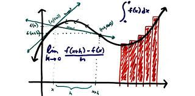
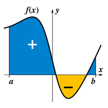

Introducción
El cálculo diferencial e integral es una rama fundamental de las matemáticas que se centra en el estudio del cambio y la acumulación. Es una herramienta poderosa que permite analizar y comprender fenómenos que varían de manera continua. En el cálculo diferencial, nos enfocamos en la tasa de cambio instantáneo de una función en un punto dado. Esto implica el estudio de derivadas, que nos proporcionan información sobre cómo una función está cambiando en un punto específico. Las derivadas nos permiten analizar la pendiente de una curva, determinar máximos y mínimos, y comprender la velocidad de cambio de una magnitud. Por otro lado, el cálculo integral está relacionado con el concepto de acumulación. Nos permite calcular el área bajo una curva o la suma de infinitos pequeños cambios. Las integrales nos permiten resolver problemas de suma acumulativa, como encontrar la distancia recorrida por un objeto en movimiento o calcular el volumen de un sólido irregular. El cálculo diferencial e integral están estrechamente relacionados y se complementan entre sí. La derivada de una función nos proporciona información sobre su tasa de cambio instantánea, mientras que la integral nos brinda la capacidad de recuperar la función original a partir de su tasa de cambio.
Cálculo Diferencial
El cálculo diferencial se enfoca en el análisis de las tasas de cambio y proporciona herramientas para comprender cómo las funciones varían en puntos específicos.
Ahora vemos el siguiente video:
Cálculo Integral
El cálculo integral es una herramienta poderosa para el estudio de la acumulación y la suma de infinitos cambios pequeños. Tiene aplicaciones en una amplia variedad de campos, desde física y economía hasta probabilidades y estadísticas. Es una herramienta fundamental para comprender y modelar fenómenos que varían de manera continua y acumulativa.
Ahora podemos ver un video :
Referencias
- Referencia 1: https://youtu.be/Ll_qHUG6OWs?si=swikMMKJ7HvtPFx- (calculo diferencial)
- Referencia 2: https://youtu.be/E3ECQskKyrU?si=LeTWbamUhVIADyvi (calculo integral)